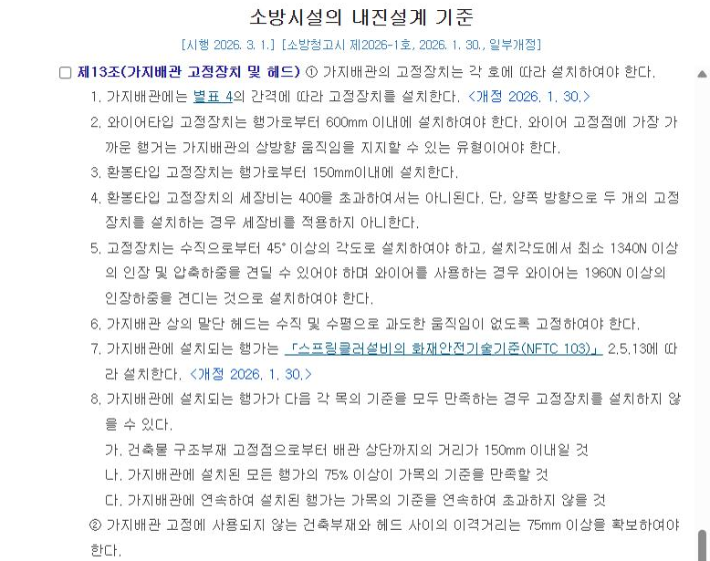
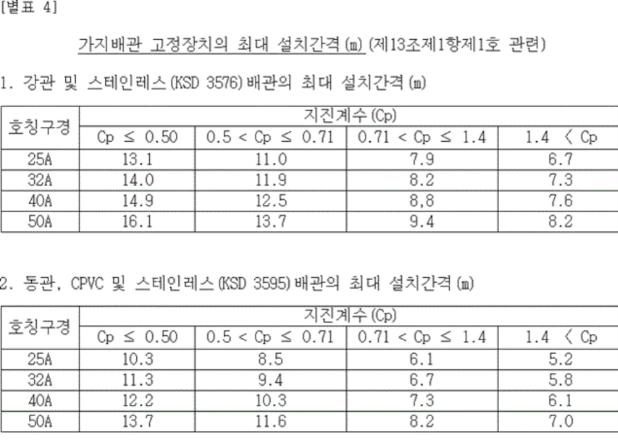
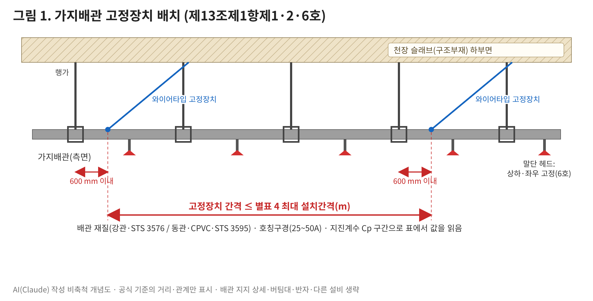
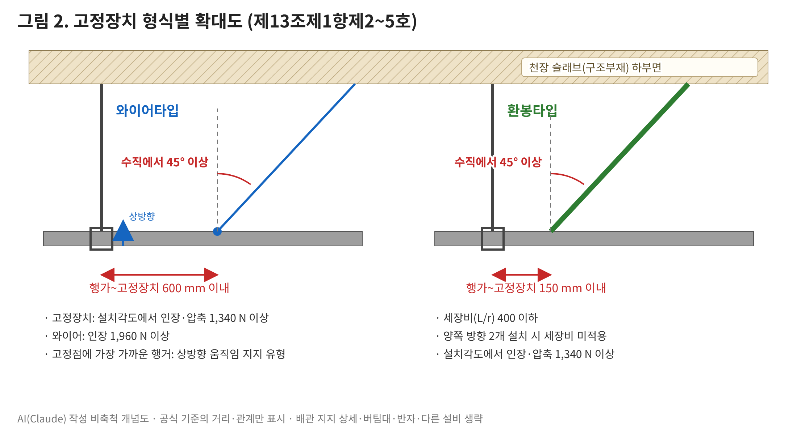
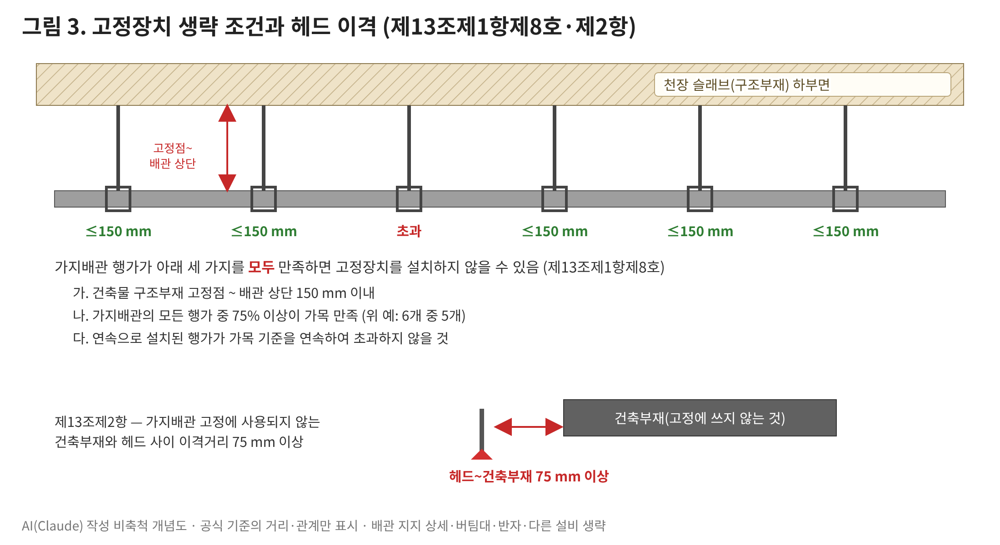

가지배관도 흔들립니다 — 가지배관 고정장치, 몇 m마다 어떻게 다나요?
왜? 지진 때 가지배관이 움직여 파손·변형되지 않도록 움직임을 제한하는 장치이기 때문입니다(제3조제24호 정의).
1. 공식 기준 원문 (소방시설의 내진설계 기준, 현행)
제13조(가지배관 고정장치 및 헤드) ① 가지배관의 고정장치는 각 호에 따라 설치하여야 한다.
1. 가지배관에는 별표 4의 간격에 따라 고정장치를 설치한다. <개정 2026. 1. 30.>
2. 와이어타입 고정장치는 행가로부터 600mm 이내에 설치하여야 한다. 와이어 고정점에 가장 가까운 행거는 가지배관의 상방향 움직임을 지지할 수 있는 유형이어야 한다.
3. 환봉타입 고정장치는 행가로부터 150mm이내에 설치한다.
4. 환봉타입 고정장치의 세장비는 400을 초과하여서는 아니된다. 단, 양쪽 방향으로 두 개의 고정장치를 설치하는 경우 세장비를 적용하지 아니한다.
5. 고정장치는 수직으로부터 45° 이상의 각도로 설치하여야 하고, 설치각도에서 최소 1340N 이상의 인장 및 압축하중을 견딜 수 있어야 하며 와이어를 사용하는 경우 와이어는 1960N 이상의 인장하중을 견디는 것으로 설치하여야 한다.
6. 가지배관 상의 말단 헤드는 수직 및 수평으로 과도한 움직임이 없도록 고정하여야 한다.
7. 가지배관에 설치되는 행가는 「스프링클러설비의 화재안전기술기준(NFTC 103)」 2.5.13에 따라 설치한다. <개정 2026. 1. 30.>
8. 가지배관에 설치되는 행가가 다음 각 목의 기준을 모두 만족하는 경우 고정장치를 설치하지 않을 수 있다.
가. 건축물 구조부재 고정점으로부터 배관 상단까지의 거리가 150mm 이내일 것
나. 가지배관에 설치된 모든 행가의 75% 이상이 가목의 기준을 만족할 것
다. 가지배관에 연속하여 설치된 행가는 가목의 기준을 연속하여 초과하지 않을 것
② 가지배관 고정에 사용되지 않는 건축부재와 헤드 사이의 이격거리는 75mm 이상을 확보하여야 한다.
| 호칭구경 | Cp ≤ 0.50 | 0.5 < Cp ≤ 0.71 | 0.71 < Cp ≤ 1.4 | 1.4 < Cp |
|---|---|---|---|---|
| 25A | 13.1 | 11.0 | 7.9 | 6.7 |
| 32A | 14.0 | 11.9 | 8.2 | 7.3 |
| 40A | 14.9 | 12.5 | 8.8 | 7.6 |
| 50A | 16.1 | 13.7 | 9.4 | 8.2 |
| 호칭구경 | Cp ≤ 0.50 | 0.5 < Cp ≤ 0.71 | 0.71 < Cp ≤ 1.4 | 1.4 < Cp |
|---|---|---|---|---|
| 25A | 10.3 | 8.5 | 6.1 | 5.2 |
| 32A | 11.3 | 9.4 | 6.7 | 5.8 |
| 40A | 12.2 | 10.3 | 7.3 | 6.1 |
| 50A | 13.7 | 11.6 | 8.2 | 7.0 |
별표 4는 국가법령정보센터에 이미지로 실려 있어, 표 수치를 그대로 옮겨 적었습니다(화면 캡처 아님). 지진계수 Cp는 같은 기준 별표 1(단주기 응답지수별 소화배관의 지진계수)에 따라 정합니다(제3조의2제2항제3호).
원문 화면 (국가법령정보센터 캡처)


직인이 찍힌 고시 원본(공문)은 국가법령정보센터에 실려 있지 않아 넣지 못했습니다. 위 두 장은 법령정보센터 화면을 그대로 캡처한 것입니다.
2. 적용 조건
① 간격은 세 가지로 읽습니다. 배관 재질(표 1 또는 표 2) → 호칭구경(25A~50A) → 지진계수 Cp 구간. 별표 4에는 25A~50A만 있습니다. 65 mm 이상 가지배관은 제10조제1항제7호(횡방향 흔들림 방지 버팀대) 규정이 따로 있습니다.
② 형식별 거리가 다릅니다. 와이어타입은 행가로부터 600 mm 이내, 환봉타입은 150 mm 이내. 와이어 고정점에 가장 가까운 행거는 가지배관의 상방향 움직임을 지지할 수 있는 유형이어야 합니다.
③ 생략 조건은 세 가지를 모두 만족할 때만. 구조부재 고정점~배관 상단 150 mm 이내인 행가가 전체의 75% 이상이고, 기준을 넘는 행가가 연속하지 않아야 합니다.
④ 헤드 이격은 별도 의무입니다. 고정에 쓰지 않는 건축부재와 헤드 사이 75 mm 이상(제13조제2항).
3. 그림으로 보기



그림은 모두 AI(Claude)로 그린 비축척 개념도입니다. 공식 기준에 있는 거리·각도·하중만 표시했고 흔들림 방지 버팀대, 교차배관, 반자, 고정장치 제품 형상, 앵커 상세는 생략했습니다. 설치 적합 판정용 도면이 아닙니다.
측정 기준점 주의: 원문은 “행가로부터 600mm(150mm) 이내”라고만 쓰며, 배관 길이 방향 거리인지·어느 지점(행가 중심, 배관 부착점)부터 재는지는 적혀 있지 않습니다. 그림은 배관 길이 방향으로 행가 중심~고정장치 부착점을 표시했는데 이는 일반적 해석입니다. “고정장치 간격”도 고정장치 부착점 사이로 그렸습니다. 해석이 갈리는 현장은 관할 소방서에 먼저 확인하세요.
4. 단계별 확인사항
| 단계 | 확인할 것 |
|---|---|
| 설계 | Cp 산정 근거(별표 1)와 배관 재질·구경별 별표 4 간격을 도면·계산서에 표기. 생략(8호) 적용 구간은 행가별 고정점~배관 상단 거리 근거를 남김 |
| 시공 | 와이어 600 mm·환봉 150 mm, 수직에서 45° 이상. 와이어 쪽 최근접 행거가 상방향 지지 유형인지. 말단 헤드 상하·좌우 고정. 행거는 NFTC 103 2.5.13(가지배관: 헤드 사이마다, 헤드 간 3.5 m 초과 시 3.5 m 이내마다 1개 이상) |
| 감리 | 고정장치 제품의 인장·압축 1,340 N(와이어 1,960 N) 이상 근거, 환봉 세장비 400 이하(양쪽 2개 설치 시 미적용) 확인. 헤드~건축부재 75 mm 실측 |
| 유지관리·점검 | 천장·덕트 공사 후 와이어 이완·탈락, 헤드 주변 75 mm 이격 유지 여부 재확인 |
5. 적용 시점과 경과조치
현행본: 소방청고시 제2026-1호(2026. 1. 30. 발령, 2026. 3. 1. 시행).
이번 개정에서 바뀐 것(신구조문대비표 대조): 제13조제1항제1호 “별표 3” → “별표 4”(제4조에 수조 검토항목 별표 2가 새로 들어가 별표 번호가 하나씩 밀림), 제7호 「스프링클러설비의 화재안전기준」 제8조제13항 → 「스프링클러설비의 화재안전기술기준(NFTC 103)」 2.5.13(인용 기준 변경). 제2~6호·제8호·제2항은 종전(제2022-76호)과 같습니다.
간격 수치: 개정 전 별표 3과 현행 별표 4의 수치를 국가법령정보센터 이미지로 대조한 결과 같습니다.
경과조치(부칙 제2026-1호 제2조): 이 고시 시행 전에 건축허가 등의 신청 또는 신고를 하거나 소방시설공사의 착공신고를 한 특정소방대상물은 종전의 기준에 따릅니다.
확인하지 못한 것: 제2022-76호 이전 판본(2021. 2. 19. 시행 등)의 제13조 문구는 이번에 대조하지 않았습니다. 해당 현장은 적용 판본 원문을 따로 확인하세요.
공식 원문 링크
· 소방시설의 내진설계 기준 현행(소방청고시 제2026-1호) — 본문·별표·신구법비교
· 개정 전 판본(소방청고시 제2022-76호, 2022. 12. 1. 시행)
· 스프링클러설비의 화재안전기술기준(NFTC 103) 현행 — 2.5.13 행거
2026. 11. 10. 국가법령정보센터 원문 기준으로 작성했습니다. 기준은 개정될 수 있으니 적용 시점의 원문을 확인하세요.